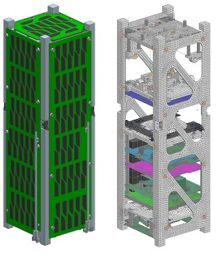
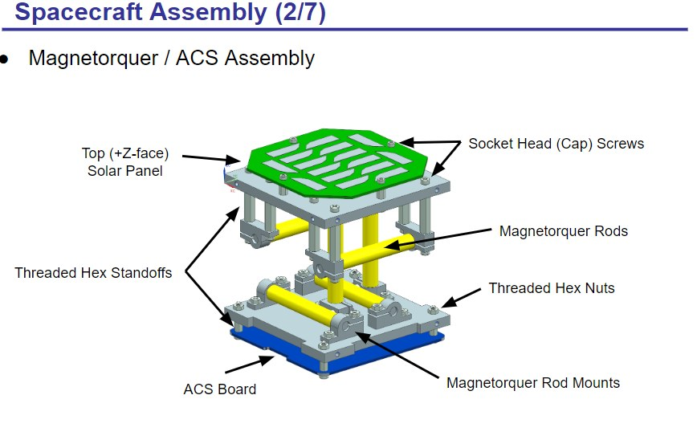
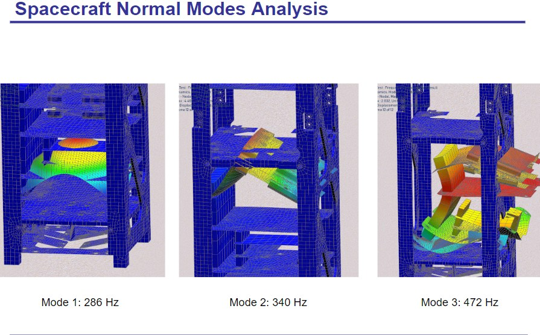
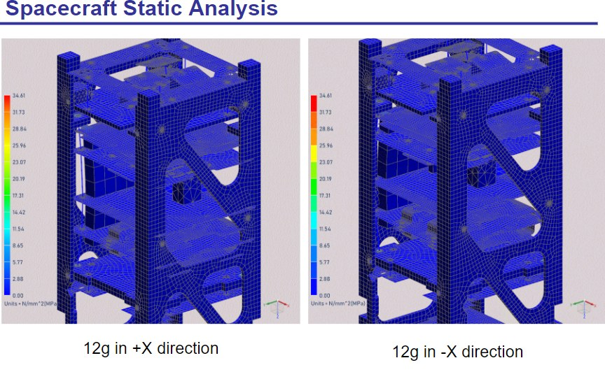

Motivation
The Canadian Satellite Design Challenge (CSDC) runs every two years, and LASSAT competed in the 5th and 6th editions while I was in the club. Both challenges asked teams to design a “Selfie Sat”: a CubeSat that takes photos of locations on Earth at the public's request, as an outreach tool for Canada's space industry.
My role
Mechanical team lead (2018–2020):
- Designed the CubeSat's internal layout and assembly plans.
- Laid out the three-camera Earth observation payload.
- Ran finite element analysis on the structure.
President (2020–2022):
- Led club operations along with the optics and mechanical subsystems.
- Wrote onboarding documents so knowledge wasn't lost as the executive team turned over every one to two years.
- Taught other students CAD and FEA through workshops.
Skills
- Spacecraft layout and assembly planning (CAD)
- Finite element analysis: modal and static
- Payload layout (three-camera Earth observation)
- Team leadership and club operations
- Technical documentation and onboarding
- Teaching CAD and FEA workshops
Design work



